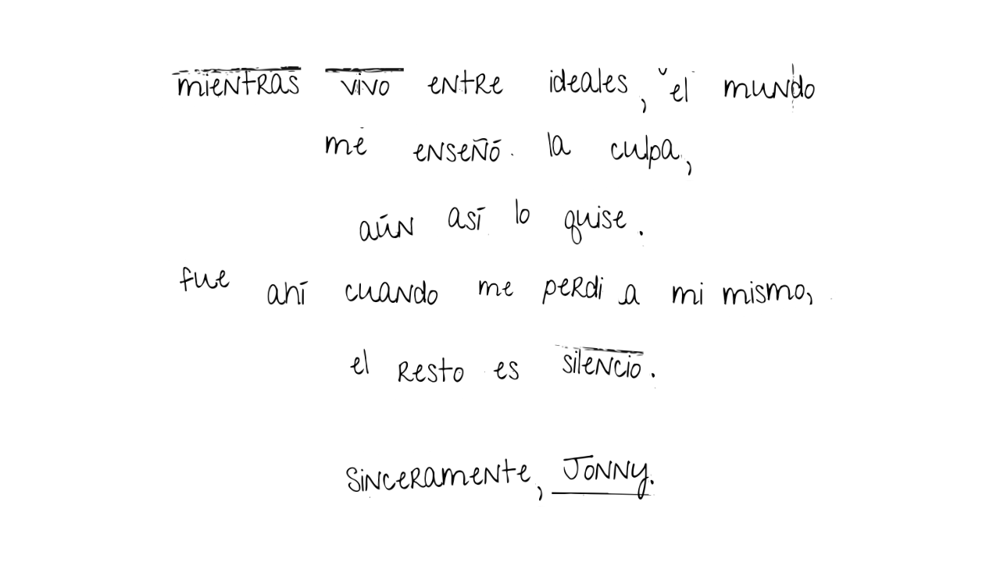

La Increíble Aventura de Jonathan Grieff
Por The Unknown

El Trabajo
El teléfono blanco había empezado a sonar. Jonathan estiró la mano, lo tomó y se lo llevó a la oreja para responder.
— ¿Hola? Habla Jonathan Grieff.
— ¡Buenas, Jonny! —respondió la voz de Ford—. Te llamaba para ver si podrías cubrir el turno de Lincoln hoy a las diez. Sé que es tu día de descanso, pero acaba de llamar enfermo y no tenemos a nadie que lo reemplace.
Jonathan lo pensó. El domingo anterior también le habían pedido cubrir otro turno. Y esa semana había hecho un turno doble el martes. Pero con los nuevos aumentos en el departamento, unas cuantas libras más no le vendrían nada mal.
— Como es tu cumpleaños, recuerda que te corresponden cuatro libras en lugar de las tres con sesenta habituales.
— ¡Claro, allí estaré! —dijo antes de colgar el teléfono.
Miró la hora en el reloj que tenía enfrente. Eran las 8:30. Entre los treinta minutos que tardaba en llegar a la estación central, los otros treinta que le tomaba prepararse y la ducha que necesitaba, decidió que debía empezar en ese mismo instante.
Después de ducharse, fue a buscar su uniforme en el armario. Estaba un poco arrugado, pues no había planeado plancharlo esa tarde. Abotonó la camisa blanca y se puso los pantalones azules. Una vez que la camisa estuvo bien abotonada, se colocó la corbata. Después se puso el saco, y por último, los zapatos y el sombrero bretón.
Observó el pastillero vacío sobre la mesa. Cuando le pagaran el turno de hoy, podría pasar por la farmacia.
Miró la hora de nuevo. Eran las 9:17. Iba bien de tiempo. Salió del apartamento, cerró con llave y bajó con calma las escaleras hasta la entrada del edificio. Al salir a Hagbourne Rd, vio que la calle seguía con los mismos baches de hacía cuatro semanas, como si no la hubieran limpiado en años. En la esquina, antes de doblar, observó a un cuervo en las ramas de un árbol. Hacía tiempo que no veía uno, y menos uno solitario. Al doblar, continuó por Broadway que, a diferencia de su famoso homónimo, carecía de esplendor y diversión. Era una calle sucia.
Al llegar a la rotonda, dobló a la izquierda y siguió por Hitchcock Way, otra calle de mala muerte. A esas alturas le dolían los pies, pero el colectivo no estaba funcionando y los taxis habían subido tanto sus precios en las últimas semanas que resultaban impagables.
Antes de darse cuenta, llegó a Station Rd y, acto seguido, a la estación de trenes. Al cruzar la entrada, se encontró con Ford, que forzó una sonrisa al verlo.
— ¡Hey! —lo saludó—. ¿Ya estás aquí? Faltan unos quince minutos para tu turno. Mejor, porque tardaremos un poco en llegar a la cabina 3.
— Está bien.
Comenzaron a caminar por el camino designado hacia la cabina. Mientras tanto, Ford seguía dándole instrucciones.
— Lincoln en realidad se encarga de la 4, pero decidimos mandar a Jeff allí porque es una intersección muy concurrida. Ya sabes, pasan como cinco trenes comerciales y cuatro de carga. La 3 es sencilla, solo cambia al carril de la izquierda cuando pase el tren a Escocia por la tarde. Eso será casi al final de tu turno, a eso de las diecisiete horas. Mientras tanto, solo deja que los trenes pasen por la derecha. No cambies el rumbo de los trenes, las quejas de los pasajeros costarían mucho dinero —dijo riendo mientras llegaban a la cabina—. Bueno, aquí estamos. ¡Mucha suerte!
— Entendido, sólo por el carril de la derecha, que tenga un buen día —dijo Jonathan mientras veía a Ford regresar a la estación.
Observó la cabina, tan sucia como la que solía usar. Se sentó en el asiento desgastado y acarició la palanca antes de volver su vista al cristal que tenía delante, esperando la llegada del tren.
Las ruedas del tren se movían con furia por el carril, hasta que llegaron a un punto donde las vías se dividían en derecha e izquierda, formando un desvío. Jonny recordó que Ford había dicho explícitamente que el camino a seguir debía ser el de la derecha. Sin embargo, ahora se encontraba con una situación diferente. No solo tenía que elegir entre dos vías, sino que también pudo ver algo más en aquellos carriles.
Tras observar la escena unos segundos, Jonathan se dio cuenta de que no era producto de su imaginación ni de no haber tomado sus pastillas por la mañana: aquello estaba ocurriendo de verdad. En ambas vías había cuerpos; tres en la de la derecha y uno en la de la izquierda. No eran cadáveres, eran personas vivas. ¿Cómo habían llegado allí? ¿Qué debía hacer en un momento así?
Las ruedas seguían avanzando, y Jonny debía tomar una decisión rápida antes de que fuera demasiado tarde. Podría dejar morir a tres personas obedeciendo a Ford, o matar a una persona tirando de la palanca, desobedeciendo su única tarea. En fin, tenía que terminar con el trabajo para conseguir su recompensa. No había tiempo para pensar, era el momento de elegir.
No seguiste tu trabajo
La decisión estaba tomada y no había marcha atrás. El tren avanzó por el carril izquierdo, arrollando en su camino el cuerpo inmóvil de la única persona en la vía.
Jonathan se quedó con la mente en blanco, una falsa calma momentánea que duró un buen rato. Se vio a sí mismo en el reflejo de la ventana: el sudor cubría su cara, ahora más pálida, y sus ojos se veían perturbados. No se reconocía. Aquella persona que lo observaba a través del cristal era un completo extraño. ¿Sería que ya no podría coexistir con su nuevo yo?
Harto de contemplar esa escena, bajó la cabeza de forma abrupta y se la cubrió con las manos. Fue entonces cuando su cuerpo reaccionó. Su ritmo cardíaco se aceleró, sus músculos se tensaron y todo su ser empezó a temblar. Llegó un punto en el que Jonny olvidó cómo respirar correctamente. En ese momento, también recordó la advertencia de Ford, y la necesidad de escapar de allí se volvió cada vez más intensa.
— Me he convertido en un asesino —reconoció, su voz temblorosa.
Esas fueron las únicas palabras que salieron de la boca de Jonathan Grieff, el hombre que solo debía revisar el correcto funcionamiento de las vías. Pero ahora, de un momento a otro, como si se tratara de un cruel regalo del destino, una persona inocente había muerto frente a sus ojos por su culpa. Dentro de su alma, ahora corrompida y llena de oscuridad, acababa de nacer un homicida.
¿Cómo podría serle sincero a Ford y explicarle que no tenía otra opción? Miles de ideas cruzaron por su cabeza, pero casi de inmediato se dio cuenta de que no importaban las excusas. Esa era la menor de sus preocupaciones.
La prueba irrefutable de su culpabilidad estaba allí, en las vías del tren, y cualquiera que uniera los cabos llegaría a la misma conclusión: Jonathan había cometido el asesinato. ¿Quién más sino?
No había duda de que, en cuanto todo saliera a la luz, lo despedirían de inmediato. El final de su historia estaba claro: no obtendría el dinero, no podría pagar la renta, el pastillero seguiría vacío y su enfermedad empeoraría. Al final, su vida terminaría lejos de todo lo que alguna vez conoció, con un último suspiro en una celda reservada para él en la cárcel de los criminales más locos y psicópatas de Oxfordshire.
Sus piernas empezaron a obedecer el impulso de huida. Jonny movió la pierna derecha con lentitud, apoyó el pie en el suelo y, con ayuda de sus antebrazos, logró levantarse de aquel incómodo asiento de la cabina.
Cuando le tocó el turno a la pierna izquierda, la torpeza se apoderó de su cuerpo y cualquier fortaleza que pudiera haber tenido hasta ese momento se desvaneció. Cayó al suelo, arrastrando consigo la silla y todo lo que había sobre el escritorio. El ruido que provocó fue considerable, por no decir escandaloso.
A lo lejos, voces masculinas comenzaron a escucharse fuera de la cabina. Sonaban exaltadas y preocupadas, como si acabaran de descubrir un cadáver recién arrollado por un tren en medio de las vías.
Se dio cuenta de que las voces se aproximaban cada vez más a su posición. En un acto de huida inmediata y con una repentina descarga de adrenalina, Jonny logró levantarse y correr hacia la puerta. La abrió y huyó lo más lejos posible de aquel lugar y de todo lo que tuviera que ver con su crimen.
Al salir, la ausencia de las paredes de la cabina permitió que los gritos, que antes se escuchaban lejanos, se percibieran con mayor claridad y cercanía. Lo estaban persiguiendo. Escuchaba sus pasos rápidos detrás de él. Disminuir la velocidad o detenerse a pensar en una salida de escape no era una opción si no quería ser atrapado.
Jonny se sentía abrumado, estresado. Ningún adjetivo podría describir con exactitud su situación. Ya no quería seguir con esa tortura.
Era tu trabajo
El tren continuó su camino, aplastando a su paso los tres cuerpos inmóviles sobre las vías. El apacible campo verdoso que rodeaba el lugar se llenó de entrañas y sesos que salieron disparados y se dispersaron en todas direcciones, tiñendo el escenario de un tono rojo sangre.
Jonathan contempló la escena durante un buen rato, hasta que una fría gota de agua cayó desde el techo sobre su frente, sacándolo del trance. Finalmente, se dio cuenta de que, en cuestión de segundos, tres personas acababan de morir a causa de una decisión tomada por él mismo.
Cualquier persona en su lugar estaría muerta de miedo y culpa, lo que haría nacer en su interior un enorme deseo de huir de aquel lugar en busca de escape.
Pero, ¿podía culparse por lo que había hecho? ¿Debía sentirse mal consigo mismo? En ese momento, un pensamiento predominó sobre los demás: ¿Qué pensaría su jefe al enterarse?
"Me importa una mierda lo que Ford pueda reprocharme", razonó Jonny, en el más sincero de sus pensamientos. "Yo estoy cumpliendo con mi trabajo, y al pie de la letra". Así de fácil, se aseguró a sí mismo una falsa, aunque consoladora, inocencia.
Ya habían transcurrido dos horas completas desde el inicio de su turno. Todo marchaba a la perfección. Pronto volvería a casa con la recompensa monetaria que le correspondía e iría directo a la farmacia para llenar su pastillero.
Sus pensamientos fueron interrumpidos por un fuerte alboroto masculino que se escuchaba fuera de la cabina. Las voces sonaban alarmadas y angustiadas. Le pareció necesario hacer una pausa y salir a ver quién estaba en peligro.
Se levantó de la incómoda silla y caminó rápido hacia la puerta. Agarró el picaporte, pero se apartó apenas puso la mano, pues la puerta se abrió de golpe y se azotó contra la pared.
Frente a él se encontraba una persona llena de ira, que al parecer lo estaba buscando. Jonny no pudo reconocer quién era, hasta que el desconocido se apartó el flequillo de la cara: se trataba de Ford.
— Jonathan, ¿tienes idea de lo enloquecidos que están allá afuera por lo que has hecho? —dijo por fin el hombre, con la voz agitada, sin aire.
— Está bien, perdóname, ¿eso es lo que necesitas escuchar? Permíteme explicarte la situación: esos cuerpos, de manera inexplicable, aparecieron en medio de las vías por las que mi tren debía pasar. Y yo decidí seguir con mi trabajo, ¿entiendes? —se defendió, intentando convencer a su jefe.
Y sin decir más, Ford decidió poner su protección y confianza en alguien más. Se le ocurrió que, de esa forma, Jonathan sería capaz de abrir los ojos y recuperar la pureza que antes habitaba en su alma contaminada.
Decidido a que esa era la mejor opción, Ford le exigió ir a la iglesia "All Saints Church", que se encontraba a solo cinco calles de la estación.
— Anda, vete —ordenó, tras entregarle la dirección en un papelito y empujarlo hacia afuera. Sin dejar lugar a quejas, cerró la puerta de inmediato.
La iglesia se encontraba detrás de un bonito y cuidado jardín. Cruzó el pequeño sendero de piedras enmarcado por el césped verde y unas cuantas flores, hasta llegar a la gran y pesada puerta de madera.
Se detuvo en su camino al escuchar llantos a su derecha. Venían de una señora mayor que sollozaba desconsolada, mientras le rezaba una extensa oración a Dios de rodillas:
— "Señor, ten piedad por mi nieta... Mi Elizabeth... —imploraba entre lágrimas—. Aunque se haya perdido en el camino de la prostitución, seguía siendo una chica muy querida por los demás... No merecía morir tan atrozmente en aquellos rieles."
El tostado
Después de terminar la escena, apretaste escape para salir del juego. Miraste la hora en el reloj: 17:47. Notaste la garganta seca, no habías tomado agua hacía un par de horas. Te dirigiste despacio a la cocina.
Al llegar, abriste la heladera y le diste un trago a la botella. Aprovechaste para sacar el queso crema y prepararte unos tostados. Varias horas frente a la pantalla daban hambre. Fuiste a la alacena a buscar el pan. Al agarrar la bolsa, notaste que el pan estaba medio duro.
Volviste a la cocina y empezaste a hacer los tostados. En ese momento, llegó tu hermana, Liz, del trabajo. Entró visiblemente cansada y tiró su mochila sobre el sillón.
— ¿Cómo va todo? — preguntó. Antes de que pudieras responder, siguió hablando—: Uy, ¿estás haciendo tostados? ¿No me hacés uno, Jonny?
— Ni en pedo — respondiste—. Hacelo vos.
Terminaste en la cocina y fuiste al sofá para comer. Pese al disgusto, tu hermana empezó a prepararse un sándwich con pan y queso. Después, se sentó a tu lado. Ella se giró de un lado a otro, mirando para todos lados.
— ¿Qué buscás?
— El control, que papá lo deja siempre por cualquier lado.
— Está en el mueble de la tele — dijiste. Tu hermana se acercó para agarrarlo. Después, la prendió.
Fue cambiando de canal hasta quedar en el de las noticias. Los presentadores comentaban sobre el aumento de precios en los supermercados. Lo ignoraste y volviste a hablar con tu hermana. No era nada interesante; de hecho, era lo mismo que la semana pasada.
— Empecé a jugar el juego.
— ¿El que te regaló papá para tu cumpleaños? — asentiste con la cabeza. — ¿Y qué tal?
— Está bien. Por ahora es medio aburrido, pero supongo que se va a poner interesante. Se trata de este chabón Jonathan... — te detuviste al ver que tu hermana no te estaba prestando atención—. ¿Me estás escuchando?
Liz tenía la mirada fija en el televisor, donde la presentadora explicaba algo acompañada de la foto de una chica joven.
— Esperame un segundo, que están dando actualizaciones del caso.
— ¿Esa es la que apareció muerta en el campo?
— Sí, sí. Están diciendo que puede que haya sido el ex. Mirá, están por mostrar las fotos del arma — dijo mientras le daba un mordisco al sándwich.
En la televisión apareció una breve advertencia de "Contenido delicado para niños y adolescentes". Se mostró en la pantalla un cuchillo, del cual parecía que habían intentado limpiar la sangre, aunque los restos eran evidentes. Sentiste que se te cerraba el estómago.
— Lo encontraron en la casa del ex — continuó hablando con la boca medio llena—. Medio descuidado, ¿no? Ahora es re obvio que la mató él.
— Sí, sí — le respondiste. Miraste el medio tostado que te quedaba en el plato—. ¿No querés comer esto? Estoy re lleno.
— ¡Obvio! — respondió mientras te sacaba el plato.
Te dirigiste a tu habitación y, al llegar, cerraste la puerta. Observaste la tarea a medio hacer que quedó en el escritorio. Podrías hacerla ahora, pero todavía tenías un par de días antes de la fecha de entrega. Por otro lado, podrías seguir jugando.
¿Qué decidís hacer?
El tostado
Después de terminar la escena, apretaste escape para tomarte un descanso del juego. Hasta ahora, estaba buenísimo. Miraste la hora en el reloj: 17:47. Sentías la garganta seca, no habías tomado agua hacía un par de horas. Te dirigiste despacio a la cocina.
Al llegar, abriste la heladera y le diste un trago a la botella. Aprovechaste para sacar el queso crema y hacerte unos tostados. Varias horas frente a la pantalla despertaban el hambre. Fuiste a la alacena a buscar el pan. Al agarrar la bolsa, notaste que estaba medio duro.
Volviste a la cocina y empezaste a hacer los tostados. En ese momento, llegó tu hermana, Liz, del trabajo. Entró visiblemente cansada y tiró su mochila sobre el sillón.
— ¿Cómo va todo? —preguntó. Antes de que pudieras responder, continuó hablando—: Uy, ¿estás haciendo tostados? ¿No me hacés uno, Jonny?
— Ni en pedo —respondiste—. Hacelo vos.
Terminaste en la cocina y te dirigiste al sofá para comer. Pese al disgusto, tu hermana empezó a prepararse un sándwich con pan y queso. Después, se sentó a tu lado. Ella se giró de un lado a otro, mirando para todos lados.
— ¿Qué buscás?
— El control, que papá lo deja por cualquier lado.
— Está en el mueble de la tele —respondiste. Tu hermana se acercó al televisor para agarrarlo y, tras hacerlo, lo prendió.
Fue cambiando de canal hasta detenerse en el de las noticias. Los presentadores comentaban sobre el aumento de precios en los supermercados. Lo ignoraste y volviste a hablar con tu hermana. No era nada interesante; de hecho, era lo mismo que la semana pasada.
— Empecé a jugar el juego.
— ¿El que te regaló papá para tu cumpleaños? —asentiste con la cabeza—. ¿Y? ¿Qué tal?
— Está muy bueno y seguro que va a mejorar. Se trata de este chabón Jonathan... —te detuviste al ver que tu hermana no te estaba prestando atención—. ¿Me estás escuchando?
Liz tenía la mirada fija en el televisor, donde la presentadora explicaba algo acompañada de la foto de una chica joven.
— Esperame un segundo, que están dando actualizaciones del caso.
— ¿Esa es la que apareció muerta en el campo?
— Sí, sí. Están diciendo que puede que haya sido el ex. Mirá, están por mostrar las fotos del arma —dijo mientras le daba un mordisco al sándwich.
En la televisión apareció una breve advertencia de "Contenido delicado para niños y adolescentes". Se mostró en la pantalla un cuchillo del que parecía que habían intentado limpiar la sangre, aunque los restos eran evidentes. Sentiste un escalofrío en la espalda.
— Lo encontraron en la casa del ex —continuó hablando con la boca medio llena—. Medio descuidado, ¿no? Ahora es re obvio que la mató él.
— Sí, sí —le respondiste, tomaste un último mordisco al tostado y te paraste—. Me voy a mi pieza.
— ¡Obvio! —respondió mientras te sacaba el plato.
Te dirigiste a tu habitación y, al llegar, cerraste la puerta. Observaste la tarea a medio hacer que quedó en el escritorio. Podrías hacerla ahora, pero todavía tenías un par de días antes de la fecha de entrega. Por otro lado, realmente querías seguir jugando.
¿Qué decidís hacer?
La libertad
El escapar de aquel lugar infernal le hizo percibir y apreciar detalles que nunca antes se había tomado el tiempo de valorar: el ulular de los búhos en la cima de los pinos, los cálidos rayos del sol sobre su cara, que lo hacían entrecerrar los ojos, y la fresca brisa que alborotaba sus cabellos. Aquello le hizo saborear la esperanza y la libertad que tanto anhelaba desde que se levantó en la mañana. Oh, qué lejana se sentía aquella mañana, ahora que la recordaba con otros ojos.
Pero toda ilusión se esfumó porque, a lo lejos, resurgieron los fuertes pasos de aquellos imbéciles que lo buscaban. Optó por seguir corriendo, por más que sus piernas estuvieran casi inútiles, exhaustas por el sobreesfuerzo. Jonathan se preguntó cuánto podría aguantar en ese estado deplorable, o si era posible que sus temblorosas piernas dejaran de funcionar de repente y terminara desplomándose en el piso. Al menos, él sentía que era posible.
Se le ocurrió que, en algún momento, el cansancio terminaría por alcanzarlos y ellos lo perderían de vista. Si quería que eso ocurriera rápido, debía planear algo y llevarlo a cabo en ese instante: se escabulló por un antiguo y estrecho callejón de ladrillos, cuyo pavimento estaba repleto de fragmentos de vidrio verdoso, provenientes de botellas de whisky, que se mezclaban con charcos de color ámbar. Debían de ser borrachos que estuvieron allí antes y que usaron dichos objetos para golpearse.
Con cuidado para no pisar ningún fragmento, corrió de puntillas hasta llegar al final, que no tenía salida. Sin embargo, notó que el muro no era muy alto y se sintió capaz de saltar perfectamente si conseguía suficiente impulso. Debía intentarlo; después de todo, no había una idea mejor que esa.
También observó que, convenientemente, debajo del muro había una caja de tablones de madera, que se veía lo suficientemente grande y resistente como para soportar su peso. Le vendría de maravilla para impulsarse hacia el otro lado.
"Esto me facilitará las cosas", se animó a sí mismo, mientras reunía coraje.
Y con las últimas fuerzas que pudo sacar de su cuerpo, logró saltar y caer sobre sus dos pies en el borde superior del objeto, agitando los brazos para recuperar el equilibrio.
Deseaba tomarse un tiempo para relajarse y recuperar el aliento, pero, al divisar a sus cazadores a solo unos cuantos metros de él, sintió que no podía. Las miradas rojas por la ira, los dientes apretados y los alientos mezclados con rabia y furia que soltaban partículas de humo en el aire, le recordaban a auténticos toros en una plaza, embistiendo sus astas desenfrenadamente.
Jonathan saltó, impulsándose con los brazos sobre el muro, y cayó estrepitosamente sobre el techo de chapa de una vivienda. Oyó insultos masculinos que venían de donde había saltado; eran ellos, pero a Jonny no le preocupó, porque seguramente no tendrían la misma agilidad que él para poder subir. Aquella caja no parecía lo suficientemente estable para aguantar el peso de todos esos hombres juntos.
Siguió caminando con pasos resonantes sobre el tejado hasta llegar al final y encontrarse con que, del otro lado, se veía un bosque de altos pinos, el mismo que se observaba a lo lejos desde la estación de tren. Las anchas hojas verdes filtraban los radiantes rayos de luz anaranjados del sol, que ya comenzaba a esconderse por el horizonte. Finalmente, dio un último salto desde el techo hasta tierra firme, cayendo de rodillas.
¿Cómo volvería a casa? ¿Era siquiera seguro regresar? Sin embargo, no le molestaba la idea de fugarse e iniciar una vida en el bosque. Quizás podría alimentarse de animales, y, a falta de armas, se las arreglaría con animales pequeños y plantas silvestres. Jonathan recordó un documental sobre el reino vegetal que vio en la televisión, donde se explicaba sobre diferentes plantas tóxicas y dañinas para los humanos. Creyó recordar algunas y se convenció de que eso era más que suficiente para sobrevivir.
Pero, ¿qué estaba pensando? Sacudió la cabeza y se dio cuenta de que vivir en el bosque era una pésima idea. ¿Qué pasaría si lloviera? ¿Cómo aguantaría la oscuridad abrasadora y silenciosa de la noche? ¿Cómo se las arreglaría a la llegada del invierno?
Jonathan anhelaba el calor y la seguridad de su hogar. Toda su vida había detestado los colores apagados y el escaso orden que reinaba en aquel lugar, pues le recordaban a su propia soledad, así como a la gran cantidad de problemas con los que tenía que lidiar a diario. Sin embargo, seguía siendo el hogar que le ofrecía un lugar cómodo para dormir. El agua y la comida escaseaba, pero siempre pudo arreglárselas solo, como siempre había sido para él. Dejó de pensar y arrancó su camino, con ramas crujiendo a cada paso que daba.
Comprendió que no podría seguir huyendo y, aunque sonaba aterrador, debía entregarse. Pero, si llegaba a cambiar de opinión, también podría cambiar el rumbo de las cosas, siempre y cuando no lo encontraran… ¿Qué hará?
La iglesia
Jonathan observó cómo un señor salía del confesionario y se abalanzó para entrar. Mientras caminaba a pasos cortos, sus manos frotaban los brazos cargados con el peso del momento. No era culpa, tampoco pena, solo le faltaban sus pastillas.
Empujó la pesada puerta de madera y un crujido profundo resonó. La luz tenue de los vitrales cortaba el aire polvoriento en rayos multicolores, y por un instante todo pareció ajeno a su desastre. Sus pasos eran cortos y arrastrados, se sentía como si entrara en un compromiso, solo que nunca había estado en uno.
Miró la palma de sus manos y arrastró el dedo índice sobre el anular de la otra. La mayoría de los hombres a su edad ya estaban casados, tenían una familia y un trabajo estable. Él, por el contrario, estaba yendo a confesarse porque Ford lo quería así, ya que su jefe era muy religioso.
El olor a velas e incienso lo golpeaba. Desde pequeño, había amado el olor a quemado. Cuando su madre dejaba un pastel horneándose más tiempo del requerido, Jonathan aprovechaba ese efímero aroma que tanto le gustaba.
Llegó al confesionario. Tocó la cortina con dudoso respeto, y al sentarse, la madera fría bajo sus manos parecía recordarle lo que había pasado. Quería confesar, sí, pero también quería escapar; estaba allí porque tenía que estarlo, no porque quisiera.
Unos segundos después, escuchó la voz del Padre al otro lado de la cortina:
— Paz contigo, hijo. ¿Qué te trae hoy por aquí? No te veo desde que eras pequeño —dijo con suavidad, como si su tono pudiera envolver cualquier tensión—. Siempre serás bienvenido a la casa del Señor, a menos que hayas cometido algo demasiado atroz, ¿sabes? Jajá, es broma; siempre habrá la oportunidad de recibir el perdón a cambio del reconocimiento de lo que hiciste.
Jonathan tragó saliva. Se movía inquieto, frotándose de nuevo los brazos, mientras el aire parecía hacerse más denso. Por un instante, solo escuchó el latido de su propio corazón.
— ¿Estás bien, Jonny? ¿Hay algo que necesites confesar? —dijo el Padre, preocupado.
Entonces, dudó: ¿debería abrirse por completo y enfrentar la realidad, con la esperanza de encontrar alivio? ¿O sería más fácil suavizar la verdad, mentir un poco, y evitar el peso de confesarlo todo? El confesionario se convirtió en un espacio donde solo él y su conciencia existían, y cada palabra que estaba por salir decidiría cómo continuaría este encuentro.
el fuego
Jonathan solo contaba con unas pocas pistas de música en su pequeño reproductor de música. Había un poco de Frank Sinatra, John Leyton y Roy Orbison. Todas las canciones eran perfectas para aquél momento. Pero... ¿Cuál elegiria?

Cargando...
Las gotas frías de agua caían en abundancia, formando profundos charcos en la tierra húmeda. Cuando Jonathan hundía sus pies en ellos, un sonido de ¡chap! hacía que el agua salpicara, expandiéndose en pequeños y grandes círculos. Sus botas y pantalones quedaron completamente manchados, perdiendo su color para teñirse de un tono marrón.
Pero la buena noticia, entre tantos infortunios, era que ya se encontraba parado en la entrada de su hogar. Un sentimiento de nostalgia y seguridad inundó su cuerpo; no veía la hora de tirarse en el sofá y olvidarse de todo.
Rodeó el picaporte con la mano. El metal, frío y brillante por las diminutas gotas de agua, se pegó a su palma. Con fuerza lo giró y empujó la puerta hasta que, tras un leve crujido, se abrió por completo. Frente a él, se presentaba un oscuro pasillo.
Pero antes de entrar, volvió la cabeza en dirección a aquel extenso y complejo bosque del que había venido. Estaba paranoico y necesitaba revisar a cada rato si aquellos hombres seguían detrás de él, o peor, la idea de que se tratara de la policía le generaba escalofríos.
Pasó, prendió la luz y cerró con un azotón la puerta. Necesitaba ir a la cocina urgentemente. Abrió la heladera con la ilusión de encontrar algo mínimamente bueno para comer, y lo que halló fue un pequeño bowl transparente de ensalada de frutas. La luz blanca resaltaba los variados tonos de los trozos de durazno, kiwi y las cerezas de un rojo oscuro. Era más que excelente para saciar el hambre y la sed que tanto estaba sufriendo.
Lo agarró, hundió una cuchara en el jugo, y se dirigió al sofá del living. Dejó el bowl en la mesa ratona e inició su búsqueda diaria del control remoto, que siempre se extraviaba por dejarlo tirado por ahí.
Pero esta vez tuvo suerte, porque lo encontró rápidamente hundido bajo el respaldo. Ahora sí, prendió el televisor, posó el bowl sobre su regazo y, finalmente, presionó el botón rojo. Un canal de noticias fue lo primero que captó su interés.
A Jonathan no solo le llamó la atención el fuerte acento británico de los periodistas, sino también los grandes carteles rojos que tapaban la mitad de la pantalla. En ellos, se leían titulares sensacionalistas que gritaban: "¡NOTICIÓN!", "¡EL ASESINO IMPARABLE!", "¡NADIE LE TEME!"
"¿Qué?", se preguntó. "¿Acaso estaban hablando de...?" Y de repente, otro cartel aún más grande llenó toda la pantalla, tranquilizando sus miedos: "HOMBRE EN FRANCIA ESTRANGULA A POLÍTICO CORRUPTO Y ES ALABADO POR LA PRENSA".
Los presentadores sonreían mientras, en la gran pantalla que se ubicaba detrás de ellos, se repetían las mismas imágenes sangrientas del asesinato, exhibidas como un trofeo. El tono de la narración trivializaba el dolor humano: el canal no se centraba en informar, sino en alimentar el odio en la sociedad.
"¡Bam, bam, bam!", los golpes provenientes de la puerta sonaron tan fuertes que taparon las voces de la televisión. Los mismos venían acompañados de gritos masculinos, que se identificaban como policías y le informaban que lo mejor que podía hacer era entregarse inmediatamente.
Jonathan se levantó tan deprisa que el bowl cayó al suelo, desparramando toda la ensalada de frutas. Pero ni siquiera fue capaz de darse cuenta, porque su corazón comenzó a latir con fuerza, sus músculos se tensaron y sus piernas temblaron, recordándole todo lo vivido en la estación.
"¡Bam! ¡Bam! ¡Bam!", los golpes se repetían cada vez más fuertes. Y no fue hasta que se sumó el sonido de una madera rompiéndose que Jonny salió del trance y se dirigió a toda prisa hasta la cocina. De nuevo, pero es que allí se hallaba una ventana corrediza del tamaño perfecto para que su cuerpo pudiera pasar.
Justo cuando llegó a la cocina, pudo oír cómo habían derribado la entrada. Oficialmente, estaban dentro. Tomó el marco de la ventana y la deslizó hasta abrirla por completo. Era el momento para escaparse e irse para siempre de aquel lugar, pero no lo hizo, al menos no aún, porque otra idea se cruzó por su mente: quemarlo todo.
Con paso rápido, caminó hasta un cajón que se encontraba al lado del horno, donde siempre guardaba los utensilios de cocina más esenciales, incluyendo el encendedor. Lo agarró junto a un repasador olvidado en una hornalla. Encendió este último, provocando que la llama corriera de un extremo a otro en cuestión de segundos.
Dejó caer todo al suelo, a excepción del encendedor, que mantuvo en su mano derecha. Acercó una botella de alcohol etílico que guardaba en una de las alacenas y, con manos temblorosas, volcó el líquido, generando así una enorme y brillante llamarada que fue creciendo a medida que avanzaba por cada mueble de madera.
Jonny pasó por la ventana y, una vez afuera, la cerró. Arrancó a correr lo más rápido posible, sin mirar atrás.
El frío viento de la noche chocaba contra su cara. Lágrimas brotaron de sus ojos, era una mezcla de felicidad y tristeza. Pensó que realmente ya no sabía quién o qué era, el porqué de tomar decisiones tan crueles y arriesgadas, pero emocionantes y llenas de adrenalina al mismo tiempo.
Sus pensamientos fueron interrumpidos por un ruido ensordecedor que se oyó detrás de él. A lo lejos, se trataba de una explosión. Su casa se había convertido en cenizas, junto con todas las personas en su interior.
La detención
Jonathan cerró la puerta suavemente. Sus manos aún temblaban y todo a su alrededor se sentía ajeno. Nunca había imaginado que su miserable vida pasaría tan rápido. Cada segundo contaba, y él seguía paralizado, analizando la situación de forma atónita.
Bajó la cabeza y tomó su sombrero bretón con la palma abierta, dejándolo en algún espacio desocupado del perchero. Se frotó la cara con fuerza para tranquilizarse, generando un calor similar al de la ansiedad que sentía. Avanzó hacia la sala principal y se dejó caer en el sillón. Su reflejo en el televisor lo encaró sin piedad: patético, despreciable, un ser que incluso él mismo repudiaba. Jonathan siempre había sido un hombre inseguro, pero si antes se creía miserable, ahora sabía que no tenía remedio.
Tomó el control remoto, lo único que le daba la oportunidad de dominar algo en su vida con total libertad. Las noticias eran aburridas, como siempre: un gato atrapado en la copa de un árbol, opiniones anarquistas de la minoría, y otros títulos nada prometedores. Quizá el próximo sería más maravilloso: “Las aventuras de Jonathan Grieff”, siempre eran titulares vagos y genéricos.
Su cabeza apuntó al cielorraso. En el espacio publicitario, de fondo, se escuchaba "Who's Sorry Now" de Connie Francis, que llenaba el silencio. Era una artista que en su juventud se escuchaba frecuentemente en la radio de su madre, quien estaba muerta, al igual que… bueno, ya no importaba. La letra de la canción resonaba en su cabeza: "Hiciste lo que hiciste, ahora debes pagar". Era como si los mismos muertos pudieran castigarlo.
Un golpe seco sacudió la puerta principal. Jonathan se puso tenso. La voz grave que se filtró por la cerradura confirmó lo que temía: la policía por fin estaba allí. Miró rápido a su alrededor y apagó la televisión. Sus manos no le permitían pensar. "¿¡Qué hago!?", se preguntó.
— Quizá puedo romper una ventana y escapar... —susurró.
Eso era muy dramático para Jonathan. Aun así, ya tenía un libro muy pesado de Shakespeare sobre su regazo para hacer estallar la ventana. Caminó de un lado a otro mientras, desde afuera, se escuchaba la voz agresiva de los oficiales.
— ¡JONATHAN GRIEFF, ABRA AHORA MISMO O ENTRAREMOS POR LA FUERZA! ¡SABEMOS QUE ESTÁ AHÍ ADENTRO!
Fue corriendo hacia el baño, se vio en el espejo y se echó el cabello hacia atrás con ambas manos, dejándolo medianamente ordenado.
Se paró frente a la puerta. Pensaba en qué decir, cómo actuar o cómo hablar. De cualquier forma, la policía no era altamente subsidiada por el Estado, así que su actitud dejaba mucho que desear.
Puso la mano en la perilla; estaba fría al tacto. Giró su muñeca y, al arrastrar la puerta, la luz del sol le dio directo en la cara.
— Señor Grieff, queda detenido bajo la Ley de Policía y Evidencia Criminal de 1993. Mantenga las manos donde podamos verlas y no haga movimientos bruscos.
Hizo exactamente lo que le ordenaron. Mientras le esposaban las manos, pudo escuchar al mismo hombre que le leyó la detención decir en voz baja para sí mismo: "Creo que lo hice bien". Era, de seguro, un practicante; su placa decía "Willard Wolfman". A su lado, el inspector a cargo, un hombre de mediana edad con gesto pétreo, observaba en silencio. Detrás, dos agentes armados cubrían la entrada, contándose chistes de mal gusto.
Willard le tomó el hombro con fuerza y lo dirigió hacia el vehículo. A pesar de ser casi policía, era demasiado considerado.
— Nunca tuvimos a un criminal que se dejara esposar tan rápidamente —aseguró Willard.
— Sí, no lo sé... Aún pienso acerca de quiénes eran las personas atadas en los rieles.
— Creí que…
— No —contestó Jonathan.
El inspector, de nombre Rodolfo, se acercó a ver qué estaba pasando. No era común que entre un policía y un criminal se tuviera una conversación tan amena. Trató de esperar a que Willard se diera cuenta de que lo estaba mirando fijamente.
— Preoficial Willard, por favor, no interactúe con el sujeto hasta llegar a la comisaría —indicó de manera intimidante.
La mentira
El Padre guardó silencio, expectante a sus palabras, dispuesto a ayudarlo a afrontar cualquiera de sus inquietudes. Como notó que Jonathan no se sentía seguro al ser sincero, le brindó más palabras de apoyo, explicando cómo Dios siempre perdona los errores que cometemos, sin importar su gravedad.
Jonathan se sintió convencido. Necesitaba desahogarse de todos aquellos acontecimientos que lo perturbaban y le rompían la cabeza. Debía aprovechar esta oportunidad de honestidad que Ford le había dado. Después de todo, ¿qué podría hacer un simple cura?
Abrió la boca, dispuesto a reconocerlo todo, y entrelazó sus dedos en busca de una tranquilidad inalcanzable.
— Aquel tren... —rompió el silencio—. Pasó por aquellos rieles, ¿sabe? Es que trabajo en una estación de tren y... —alargó innecesariamente, indeciso de lo que iba a decir a continuación—. Verá, en cuestión de segundos, atropelló a una persona, su cuerpo quedó separado en partes, toda su sangre manchó la parte delantera del tren... —se detuvo—. Oh, créame, Padre, aquello no fue intencional, yo solo seguía con mi trabajo.
De un momento a otro, el silencio volvió a reinar entre ambos. ¿Acaso su mentira estaba resultando poco creíble?
— Cuando Ford se enteró, se enojó muchísimo conmigo, y por eso ahora estoy aquí. Él fue quien me envió —agregó, adoptando un tono dramático en la voz—. La verdad es que no logro descifrar qué quería que hiciera, es decir, ¿prefería que matase a las otras tres personas en el otro riel? Es un loco, de hecho, creo que es él quien debería estar sentado aquí en mi lugar.
— Querido, deme un segundo... —respondió el Padre, que se oía algo asustado.
Se pudo oír cómo los pasos del sacerdote se alejaban. Abrió la puerta y la cerró. Ahora sí, Jonathan era la única persona en aquella habitación, únicamente iluminada por la celosía.
Se quedó dentro del confesionario, observando las palmas de sus manos mientras, en voz baja, repasaba cada palabra dicha, imitando el mismo tono de voz, asegurándose de que nada hubiera sonado demasiado incriminador. Miró alrededor del confesionario vacío, asegurándose de que nadie lo estuviera escuchando o espiando por algún pequeño orificio en la pared.
"Sí, lo hice excelente, no, más que excelente. Sin titubear, sin huecos en la historia...", se dijo, alegre por la construcción de su verdad. Nadie se enteraría jamás de la realidad de la historia, no podrían hacerle nada. Después de todo, él solo cumplía con su trabajo. Y si alguien llegara a sospechar, pues no importaba, porque a cualquiera que le preguntaran, les contaría la misma historia falsa que él repetía. Jonathan llevaría su secreto a la tumba, y esa situación era... perfecta.
Se dio por satisfecho. Aquel confesionario le ayudó a entrar en razón, a encontrar su camino, el correcto: el de la mentira. Se levantó e inició su camino con paso seguro y las manos escondidas en los bolsillos, para inspirar una sensación de seguridad y superioridad sobre el resto, en dirección a la enorme puerta de la iglesia. Ya no tenía nada que hacer allí.
La verdad
El Padre guardó silencio, atento a escuchar sus palabras y ayudarlo a afrontar cualquiera de sus inquietudes.
— Seguí el rumbo. Ford dice que lo que sucedió fue mi culpa, pero aún no termino de entenderlo —dijo Jonathan.
— ¿Continuaste con alguna actividad nociva para tu salud? ¿Estamos hablando de alguna adicción? —preguntó el Padre con cautela—. Recuerdo que tomabas pastillas... Todavía tienes la edad para perdonarte; y empezar en la casa del Señor es una excelente opción.
— La idea no fue mía —respondió Jonathan.
— ¿La de las pastillas? —insistió el Padre.
— La de venir a la iglesia
— Jonny, no entiendo a lo que te refieres. ¿Podrías ser un poco más claro?
— Dejé la palanca donde debía estar —confesó Jonathan, casi con frialdad—. El tren avanzó sin piedad e hizo explotar tres cuerpos. No sentí culpa y esa es la razón por la cual Ford me forzó a venir aquí. No entiendo el problema; él me dijo explícitamente que siguiera con mi trabajo. ¿Acaso quería que cambiara el rumbo y matara a una persona?
— Jonathan... dame un momento —murmuró.
Se escuchó la puerta abrirse del otro lado. El Padre, al parecer, había salido a darse un respiro. Jonathan oyó sus pasos alejarse, aunque todavía le parecieron cercanos.
Se quedó dentro del confesionario, observando la poca luz que atravesaba la celosía. Apoyó la cabeza y respiró con tranquilidad; sintió la paz de haber podido decir todo lo que había dicho. Quizá sí era una buena idea ser religioso. Quizá sí lo era. Ya lo había solucionado.
Levantó la cabeza y se enderezó. Abrió la puerta y se dirigió hacia la gran salida de la iglesia. Caminaba alegremente, como un niño que va a contarle un pequeño logro a su madre. Miraba los vitrales, que ahora le parecían hermosos. ¿Cómo no les había prestado atención antes?
En ese momento vio un cuartito. Probablemente, el Padre estaba allí. Quiso saludarlo y agradecerle por su ayuda. Se acercó y apoyó la mano sobre la puerta. Desde adentro se escuchaba el sonido de una llamada, el timbre de un teléfono antiguo. Jonathan entró con una sonrisa de oreja a oreja, solo para encontrar al Padre con el rostro aterrorizado.
— ¡JONATHAN, ALÉJATE! —gritó.
Él no entendía. ¿Acaso no era bienvenido? Las manos del Padre temblaban incontrolablemente, sus ojos se veían llorosos y asustados mientras apretaba el rosario colgado de su grueso cuello.
— Padre, no entiendo… ¿A quién está llamando? —preguntó Jonathan, desconcertado.
— ¡ALÉJATE, TE DIJE! LOS OFICIALES SABRÁN DE ESTO —vociferó.
Jonathan quedó inmóvil. No podía ser. ¿Los oficiales iban a venir a buscarlo? No quería terminar en la cárcel. Cada vez que se acercaba, el Padre daba un paso hacia atrás. Estaba asustado. Pero Jonathan sabía que había algo que los diferenciaba: uno había estado frente a la muerte y el otro estaba lo más cerca del cielo posible. El único que podría causar algo con total libertad allí era Jonathan, a menos que lo atraparan los oficiales. Así que pensó: ¿qué tal una muerte más? ¿O quizá un escape? Podría hacer lo que quisiera.
El escape
Jonathan dio un paso más hacia el Padre y se quedó observándolo. El Padre cayó al suelo bruscamente, ya no había espacio detrás; miraba descontroladamente a cualquier lugar con tal de correr. Jonathan, por el contrario, lo vigilaba. Por unos segundos, le dio la espalda.
— Pensé que cualquiera podría ser aceptado, incluso si se trata del acto más vil.
— No todo se trata de un simple perdón Jonathan —contestó el Padre.
Jonny levantó sus manos hacia él poco a poco. Vio sus palmas, sus marcas, su forma. Lo miró al Padre nuevamente. Acercó sus manos.
El sacerdote estaba desesperado; nadie contestaba el teléfono, nadie acudía en su ayuda. Con un giro nervioso, intentó volver a marcar, como buscando un milagro que nunca llegaría. Jonathan le arrebató el teléfono y lo arrojó hacia al suelo. Estalló en mil pedazos, mientras un pitido agudo y averiado seguía resonando en la habitación.
— Podría ahorcarte ahora mismo —susurró Jonathan, carismático, mientras tomaba el rosario del pobre hombre.
— ¡AYUDA! ¡POR FAVOR, AYUDA! —gritó el Padre, con la voz quebrada por el pánico.
Jonathan inclinó su rostro hacia el suyo, mirándole fijamente a los ojos, llenos de terror. Nunca había sentido un poder tan absoluto sobre alguien. El Padre, incapaz de aceptar la situación, giró la cabeza hacia un costado, buscando cualquier escape.
Con ambas manos, Jonathan lo empujó con fuerza contra la pared. La espalda del Padre se dobló con un crujido estremecedor. Lo observó, devastado por un instante y, finalmente, salió corriendo hacia la salida de la iglesia, dejando al Padre caído y solo.
La muerte
Jonathan dio un paso hacia el Padre y se detuvo, observándolo. El hombre cayó bruscamente al suelo, ya no había escapatoria. Miraba a su alrededor, buscando desesperadamente por dónde huir, pero Jonathan no le quitaba los ojos de encima. De pronto, Jonathan volteó y le dio la espalda.
—Pensé que cualquiera podría ser aceptado, incluso si se trata del acto más vil.
—No todo es un simple perdón —contestó el sacerdote.
Lentamente, Jonathan levantó las manos. Observó sus palmas, sus marcas, su forma. Volvió a mirar al Padre y se acercó, sus manos extendidas.
El sacerdote estaba desesperado. Nadie contestaba el teléfono, nadie acudía a su ayuda. Con un giro nervioso, intentó volver a marcar, como si buscara un milagro que nunca llegaría. Jonathan le arrebató el teléfono y lo arrojó al suelo. El aparato se hizo pedazos, y un pitido agudo y averiado siguió resonando en la habitación.
—Podría ahorcarte ahora mismo —susurró Jonathan con una sonrisa carismática mientras tomaba el rosario del hombre.
—¡AYUDA! ¡POR FAVOR, AYUDA! —gritó el Padre, la voz estaba quebrada por el pánico.
Jonathan inclinó su rostro, mirándolo fijamente a los ojos llenos de terror. Nunca había sentido un poder tan absoluto sobre alguien. El sacerdote, incapaz de aceptar la situación, le soltó un puñetazo, haciendo que Jonathan cayera aturdido.
Jonathan se levantó rápidamente, con la mirada furiosa. Tomó el rosario, lo enrolló en el cuello del Padre y lo jaló hacia arriba. El cuerpo pesado del hombre quedó colgando en el aire. El sacerdote intentaba hablar, pero el aire no era suficiente. Jonathan fue ajustando el rosario, cada vez más, mientras el cuerpo del sacerdote se movía escandalosamente. De pronto, el Padre se desplomó en el suelo, muerto.
Jonathan había matado a un ángel, el peor pecado que podía existir. Era la primera vez que estrangulaba a alguien, ya estaba aprendiendo.
LA VIOLENCIA
No fue hasta que saliste del juego y te detuviste a mirar la ventana que notaste que ya había anochecido. Te levantaste y te dirigiste a la cocina. Tenías hambre; hacía ya bastante tiempo que habías comido tu merienda. Al llegar, notaste la mesa puesta y a tu madre llevando los platos llenos de comida.
— Llegaste justo —dijo sonriente—. Estaba a punto de llamarte.
Te sentaste en tu lugar de la mesa, al lado de tu hermana. Liz estaba distraída con su celular, no le prestaste atención. En su lugar, empezaste a comer la pasta que había en tu plato.
— Bueno, chicos, me tengo que ir. Tengo una cena con unas amigas —dijo tu madre mientras agarraba su bolso y las llaves—. Chau, los quiero mucho.
Luego de eso, salió por la puerta. No le prestaste mucha atención, no era algo inusual.
La televisión estaba prendida, sintonizada en un programa de noticias. Comentaban sobre un supuesto caso de corrupción en la política, nada extraordinario. Seguiste mirando mientras comías.
Fue entonces que el programa cambió súbitamente. Un aviso de “Último Momento” apareció en pantalla antes de que mostrasen el cadáver de una mujer, vagamente censurado. Era una escena del crimen moderadamente violenta. El asesino parecía haber actuado deprisa y descuidadamente. Un presentador empezó a explicar la situación:
“Se acaba de encontrar el cuerpo sin vida de Evelin Campos, de 21 años, en un descampado. Su asesinato parece estar relacionado con el de Mercedes Aguirrez, ocurrido en los días anteriores. La causa de muerte aparenta haber sido estrangulación con la cadena que portaba la víctima.”
Seguiste comiendo mientras mantenías la mirada fija en la pantalla. Había algo atrapante en toda la situación.
“La policía sospecha que el crimen fue cometido por la misma persona. Se considera la posibilidad de que Evelin haya obtenido información incriminatoria contra el sospechoso y que esto haya ocasionado el crimen.”
— No entiendo por qué no dicen el nombre de una vez —comentó Liz—. Ya circula su foto por todos lados. Y ya lo detuvieron, no sé qué están esperando.
— ¿Lo detuvieron?
— Sí, hace unas horas. Está en prisión preventiva por miedo a fuga. El abogado ya está peleando por eso. Ya salió por todos lados a tratar de defenderlo y qué sé yo.
— ¿Defenderlo con qué?
— No sé, salieron con que la chica lo estaba acosando y que había sido abusiva cuando estaban juntos o algo así. Se están inventando cualquier cosa con tal de ganar compasión.
¿O sea que el chico había sido acosado por su novia? Bueno, se notaba en las fotos que habían pasado que esa chica no era una santa. Entonces, ¿era tan culpable el chico? Al final del día, el asesinato era una forma de librarse de ella. No digo que deba salir libre de todo esto, pero deberían tenerlo en cuenta.
— ¿Cómo se llama el chabón?
— Eh... Rodolfo Sánchez, creo. O ese es el nombre que está circulando.
Asentiste con la cabeza y le diste un último bocado a tu plato. Luego de eso, te levantaste y te dirigiste a tu habitación.
Al llegar, volviste a sentarte en tu escritorio frente a tu computadora y abriste el juego. No podías dejarlo ahora que se había puesto realmente interesante.
La red social
No fue hasta que saliste del juego y te detuviste a mirar la ventana que notaste que ya había anochecido. Te levantaste y te dirigiste a la cocina. Tenías hambre; hacía ya bastante tiempo que habías comido tu merienda. Al llegar, notaste la mesa puesta y a tu madre llevando los platos llenos de comida.
— Llegaste justo —dijo sonriente—. Estaba a punto de llamarte.
Te sentaste en tu lugar de la mesa, al lado de tu hermana. Liz estaba distraída con su celular; no le prestaste atención. En su lugar, empezaste a comer la pasta que había en tu plato.
— Bueno, chicos, me tengo que ir, tengo una cena con unas amigas —dijo tu madre mientras agarraba su bolso y las llaves—. Chau, los quiero mucho.
Luego de eso, salió por la puerta. No le prestaste mucha atención, no era algo inusual.
La televisión estaba prendida, pese a que nadie parecía estar prestándole atención. Tampoco te pusiste a verla; no había nada interesante en lo que decían los presentadores. En su lugar, te pusiste a pensar en el juego. En cómo Jonathan se había dejado atrapar. ¿No era eso un gesto estúpido? ¿Cuál había sido el punto de escaparse solo para dejarse detener? Los policías tampoco parecían muy fuertes, podría haberles hecho frente y escapado. Tal vez incluso podría haberles quitado alguna de sus armas.
Tus pensamientos fueron interrumpidos por Liz, quien con mucho entusiasmo te puso su teléfono en la cara, mostrándote una publicación con un video.
— ¡Mirá! —te dijo emocionada—. Atraparon al asesino de hoy. Ese fue el que había matado a la ex.
— Sí, me acuerdo —respondiste mientras te enfocabas en ver el video.
En el video se podía ver cómo el chico era acorralado por la policía, y cómo intentaban contenerlo a pesar de la fuerza que él hacía para alejarlos. La pelea era muy fuerte y parecía que no iba a poder terminar. Es entonces que uno de los policías le apunta con una pistola y hace unos disparos a la pared detrás del chico. Es entonces que el asesino deja de luchar y sigue obedientemente las órdenes del policía.
El video te dejó con una sensación extraña. ¿Merecía ese chico ser tratado de esa forma?
¿En qué estabas pensando? Por supuesto que lo merecía; ese chico era un asesino a sangre fría. El asesinato de esa chica no había sido un accidente; si lo hubiera sido, no estaría peleando de esa manera con la policía.
— ¿De dónde sacaste el video? —preguntaste.
— Lo subieron a Twitter, creo que uno de los vecinos lo grabó o algo así —te respondió tu hermana—. Probablemente ahora él y su abogado intenten obtener compensación porque las condiciones de la detención son exageradas —dijo esto último entre risas mientras agregaba—: El abogado ya salió en varios canales a tratar de que ganen compasión por el tipo, diciendo que la chica era tóxica y que lo estaba acosando desde que él la dejó. Ya se inventan cualquier cosa con tal de que le bajen la condena.
¿O sea que el chico había sido acosado por su novia? Bueno, se notaba en las fotos que habían pasado que esa chica no era una santa. Entonces, ¿era tan culpable el chico? Al final del día, el asesinato era una forma de librarse de ella. No digo que deba salir libre de todo esto, pero deberían tenerlo en cuenta.
— ¿Cómo se llama el asesino? —preguntaste.
— Eh... Rodolfo Sánchez, creo. Ningún medio oficial dijo el nombre, pero como ya se vieron imágenes, la gente anda diciendo que es él.
Asentiste con la cabeza y le diste un último bocado a tu plato. Luego de eso, te levantaste y te dirigiste a tu habitación.
Al llegar, volviste a sentarte en tu escritorio frente a tu computadora y abriste el juego. No podías dejarlo ahora que se había puesto realmente interesante.
El derecho
No fue hasta que saliste del juego y te detuviste a mirar la ventana que notaste que ya había anochecido. El juego era tan aburrido que las horas se sintieron eternas. Te levantaste y te dirigiste a la cocina. Tenías hambre; hacía ya bastante tiempo que habías comido tu merienda. Al llegar, notaste la mesa puesta y a tu madre llevando los platos llenos de comida.
— Llegaste justo —dijo sonriente—. Estaba a punto de llamarte.
Te sentaste en tu lugar de la mesa, al lado de tu hermana. Liz estaba distraída con su celular; no le prestaste atención. En su lugar, empezaste a comer la pasta que había servido en tu plato.
— Bueno, chicos, me tengo que ir, tengo una cena con unas amigas —dijo tu madre mientras agarraba su bolso y las llaves—. Chau, los quiero mucho.
La televisión estaba prendida, pese a que nadie parecía estar prestándole atención. Tampoco te pusiste a verla; no había nada interesante en lo que los presentadores decían. En su lugar, te pusiste a pensar en el juego, en lo aburrido que se estaba poniendo. La historia no progresaba, el personaje se quedaba atorado en su monólogo interno yendo de un lado a otro.
Tus pensamientos fueron interrumpidos por tu hermana, quien con mucho entusiasmo te puso su teléfono en la cara, mostrándote una publicación con un video.
— ¡Mirá! —te dijo emocionada—. Atraparon al asesino ese, el que mató a la ex, el del caso que te comenté el otro día.
— Sí, me acuerdo —respondiste mientras te enfocabas en ver el video.
Las imágenes provocaron una reacción en tu estómago, eran tan crudas...
— Pasame el control —le pediste a tu hermana mientras ignorabas el programa.
Ella lo hizo sin siquiera mirarte. Cambiaste a otro canal, en el que estaban pasando la misma noticia. Así que cambiaste a otro, mismo caso. Pasaste por varios canales antes de finalmente rendirte y apagar el televisor. Las imágenes eran casi grotescas.
— ¿Cómo va el caso? —preguntaste, aunque realmente no tenías mucho interés.
— Está en prisión preventiva, pero no sé si le van a dar muchos años. El abogado está haciendo de todo con tal de que le bajen la condena —respondió tu hermana. Se notaba molesta por la situación.
— ¿Qué anda diciendo?
— Está intentando esparcir la idea de que la chica era abusiva con él y que una vez que él la dejó ella empezó a acosarlo, o algo así —dijo con una clara irritación en su voz.
Asentiste con la cabeza. Luego de esa charla no tenías muchas ganas de seguir comiendo. Aun así, intentaste dar unos bocados más antes de levantarte y dirigirte a tu habitación.
Una vez que llegaste allí, viste la ventana del juego todavía abierta. No tenías muchas ganas de seguir jugando. Parecía que la historia no progresaba, solo estaba atorado en el monólogo interno del personaje y sus viajes de aquí para allá.
Te sentaste en el escritorio y te quedaste viendo la pantalla.
El encendedor
Jonathan se quedó inmóvil ante la vista. Con el fuego reflejado en sus ojos, sonrió, más de lo que una persona normal hubiera hecho al observar cómo personas inocentes eran calcinadas por su culpa. No sintió culpa ni remordimiento, sino una calma abrasadora, por saber que, al fin, todo había acabado.
Caminó por aquel oscuro bosque. Otra vez respiraba aquel aire puro, que sentía como algo único de ese lugar, y lo creyó su nuevo hogar. Al menos allí se sentía a salvo. No había voces aterradoras ni personas que lo persiguieran; nadie se imaginaría jamás que él estaba ahí.
Sin embargo, ¿realmente quería que todo acabara? Una pregunta rondaba por su cabeza insistentemente: "¿Quién podría ser el próximo?". Rió, sintiéndose un demente. Imaginó aquellos cuerpos inmóviles convertidos en cenizas en medio del fuego, también recordó los sesos en las vías. Algo de todo eso se sentía satisfactorio, lo hacía sentir poderoso.
"La policía", el pensamiento surgió como una chispa.
El deseo de venganza se apoderó de él, y nada podría detenerlo ahora. Seguía teniendo el encendedor en su bolsillo izquierdo. Lo levantó frente a sus ojos y lo observó con detenimiento; miles de formas de matar podían ser posibles con su uso.
La certeza de que era capaz de lograr lo que quisiera lo impulsó, paso a paso, en dirección a la comisaría. Estaba decidido a llevar a cabo la única idea que rondaba por sus pensamientos: entrar y prender fuego a todo. Imaginó las llamas consumiendo todo a su paso, exterminando pasillos, celdas y, lo más importante, a aquellos animales.
Pensó en todos los medios hablando sobre ello. Era perfecto; el mundo entero presenciaría el mensaje que buscaba dar: "Yo los cazaré a ustedes, no al revés". Y así aprenderán quién le debe temer a quién.
Ya en las afueras de la oficina, como si fuera una sombra, se deslizó por una ventana abierta. Era un baño, estaba vacío, o así le pareció por unos segundos, porque pudo oír unas voces acercándose. Una de ellas abrió la puerta tras despedirse, y antes de que mirara al frente, Jonathan corrió hasta detrás de la cortina de una bañera. Aquel lugar se había convertido en un escondite perfecto.
Entonces ocurrió: un movimiento involuntario hizo que la cortina se desplazara apenas unos centímetros. El sonido fue suficiente para que la persona al otro lado lo escuchara.
— ¿Quién está ahí? —preguntó la voz desconocida, que se notaba algo asustada.
De pronto, Jonathan emergió del escondite y salió disparado hacia el pasillo. Ni siquiera miró a los ojos de aquella persona. Parado en medio del pasillo, giró la cabeza bruscamente en todas direcciones, percatándose de que una gran cantidad de ojos lo estaban observando. Los murmullos cesaron, como si el tiempo se hubiera detenido.
Se miraban incrédulos; era de no creer que la persona a la que tanto habían estado buscando apareciera de manera inexplicable frente a ellos.
El silencio terminó con un grito desesperado:
— ¡ES ÉL!
Se trataba de la misma persona del aseo, su voz retumbó por todo el lugar, activando la alarma en todos los presentes.
Tras un momento de vacilación, estalló el movimiento: todos corrieron tras él, con pasos atropellados y sillas volcando. Jonathan, en medio del desorden, buscaba algo para ejecutar su plan, y fue entonces que observó en un rincón, un bidón olvidado cuyo líquido inflamable se derramaba por la tapa mal cerrada.
— ¡Atrápenlo antes de que pueda hacer nada!
Con rapidez, prendió el encendedor y lo arrojó dentro del bidón. Un corto pero fuerte, chasquido dio nacimiento a una enorme llamarada que se fue extendiendo por cada superficie lentamente acercándose hacia los policías. Algunos, lejos de rendirse, continuaron con la persecución, a pesar de contar con extremidades y mechones de pelo completamente quemados, pero a su vez, otros cedieron y dieron media vuelta para escapar del fuego.
A unos metros más allá, había otra puerta semiabierta. Jonathan la reconoció como un regalo del destino. Corrió hacia ella sin mirar atrás. Por fin alcanzaría la libertad.
— ¡NO TE ESCAPARÁS! ¡MALDITO ASESINO! —lo maldijeron, furiosos.
La nueva vida
Jonathan se despertó en un ambiente frío y gris. Se sentó en el borde de la litera mirando al suelo. Su espalda estaba peor que nunca, el dolor nunca había sido tan fuerte. Sus manos aún temblaban un poco y el silencio de la prisión le parecía más pesado que cualquier grito de aquel día en las vías del tren. No había televisión ni música, solo el eco distante de pasos y llaves que sonaban en los pasillos.
Miró la palma de sus manos y arrastró el dedo índice sobre el anular de la otra. La mayoría de los hombres a su edad ya estaban comprometidos, tenían una familia y un trabajo estable. Él, por el contrario, estaba en un encierro total que no le permitiría nunca más conseguir esa vida.
Pensaba en lo que había hecho una y otra vez, aunque tampoco podía ignorar la efímera conversación que tuvo con Willard. No conocía a las personas que vio atadas a los rieles, ni siquiera sabía en qué momento las ataron. Quizá su penitencia había sido un poco injusta. Se preguntaba qué pensaba Ford de todo esto o qué estaban transmitiendo por la televisión en aquella hora matutina. Algo dentro de Jonathan quería ser el titular principal, ya que detestaba las noticias de los últimos tiempos.
Un golpe en la puerta de la celda lo hizo levantar la cabeza de inmediato. Su corazón se aceleró. Las llaves chocaban entre sí del otro lado y, al girar una en la cerradura, la puerta de metal se agitó amenazadoramente.
— No necesito compañía. Quédate aquí —pronunció alguien desde afuera.
La puerta se abrió con esfuerzo, lentamente. Era pesada y anticuada. Jonathan enderezó la espalda. Era humillante para él encontrarse tan desarreglado y descuidado. Aun así, se movió para ver quién era.
— Grieff, este es tu desayuno —murmuró Willard con falsa autoridad.
Jonathan tomó la bandeja con ambas manos, a pesar de que no iba a comer nada de lo que había allí. Un tostado repleto de queso, un perejil de adorno y un huevo cocido. Para tomar, un vaso de leche con olor agrio y rancio.
— No lo mires así, te acostumbrarás —soltó Willard.
— Soy intolerante. Lo único que necesito son mis pastillas. Por favor... —respondió Jonathan.
— No se permiten drogas en la prisión —dijo Willard.
— Es lo único que calma mis pensamientos. Sabes muy bien que no soy culpable; ni siquiera reconozco los rostros de las víctimas.
— No vine a escucharte, lo siento. Solo debo entregarte tu desayuno, esta carta y luego retirarme.
— Pero, por favor, escúcheme... Es un caso potencial. ¿Acaso no eras un practicante? Imagínate resolver algo así. Solo te pido mis pastillas, te daré información y podrás irte con un puesto más alto. Yo era un ordinario operador de trenes... ¡POR FAVOR!
Jonathan se estaba desesperando, ni siquiera le había prestado atención a la carta. Se sentía débil, demasiado agotado para haberse despertado hace poco tiempo. Willard no podía sostener la mirada. El aire en la habitación era denso y la carta estaba arrugada por el sudor que le perlaba las palmas.
— Debería pensarlo —respondió Willard con inseguridad. Dejó la carta en el costado de la litera y se retiró.
Jonathan quedó inmóvil, no sabía desde cuándo se comportaba como un niño. Se levantó con la bandeja en las manos y la arrojó violentamente contra la pared. Su pecho respiraba con dificultad mientras trataba de calmarse. Se movía de un lado a otro, miraba a su alrededor desesperadamente; ese no era su lugar, de seguro que no lo era.
Tomó la carta y rompió el sobre. El papel era suave. No reconoció de quién era la letra; se veía desprolija.

Jonathan no podía creer lo que acababa de leer, le causaba vergüenza a su propio ser. Se preguntaba acerca de lo que se estaba hablando allí afuera. No quería volverse un asesino idealizado. Ni siquiera era lo suficiente consciente de saber que había pasado con exactitud. Pobre la vida de la joven que había escrito tales palabras atroces. Pensaba en la identidad que la sociedad estaba creando y difundiendo. Al parecer ahora era un asesino. No sabía qué hacer.
el cuchillo
Jonathan arrugó y rompió la carta en mil pedazos. ¿Quién se atrevería a escribir eso? Él era un buen hombre, no un asesino. Su mirada se posó en la comida desparramada en el suelo; era idéntica al desastre del cadáver en los rieles, repugnante. Juntó el pan tostado con las manos y lo puso sobre la bandeja; trató de esconderlo en la esquina de la celda, como si ocultara un cuerpo.
Las manos le quedaron manchadas. Se las limpió contra el pantalón, pero seguían igual de sucias. Tomó los cubiertos para apoyarlos sobre la cama, pero antes los miró con atención. Eran fríos, puntiagudos y, sobre todo, peligrosos.
El tenedor cayó sobre la cama con un sonido hueco, pero el cuchillo permaneció en su mano: pesado, firme, como si siempre hubiera estado destinado a sostenerlo.
Toda su vida había hecho lo correcto; había obedecido, trabajado, amado, creído en la justicia. Y, sin embargo, estaba ahí, solo. Sus dedos se cerraron con más fuerza alrededor del mango.
Se escucharon las risas incontrolables de unos hombres, acompañadas de golpes metálicos; seguramente le estaban pegando a las rejas.
— ¡Hey, amigo! No sé qué hacés con eso, pero debemos sacártelo —dijo Tom, uno de los oficiales que había estado el día en que lo detuvieron en su casa.
— ¡Willard realmente no sabe nada de este mundo! ¿Quién le daría un par de cubiertos a un criminal? ¡Esto es una broma! —respondió el oficial Naveen, quien también había estado presente.
Jonathan no respondió, aunque sí lo pensó. ¿Desde cuándo se les permitían elementos punzantes a los detenidos? Buscó el tenedor y se acercó a las rejas, extendiendo la mano.
— ¡Eso es, Jonny! ¡Creo que Wolfman sí tenía razón en algo! Eres muy obediente, bien hecho —dijo Tom entre risas.
— ¡TOM, CUIDADO! —gritó Naveen.
En un abrir y cerrar de ojos, Jonathan clavó el cuchillo en uno de los oficiales a través de las rejas. No lo había pensado; quizá fue la furia, el agotamiento o su vida tan aburrida. Después de que Tom cayera al piso, tomó las llaves de su cinturón y trató de abrir la puerta lo más rápido posible.
— ¡Por favor! ¡Ayuda! Tom acaba de ser asesinado, necesitamos seguridad, ¡seguridad! —exclamó Naveen mientras corría.
Jonathan abrió la pesada puerta y dio un paso hacia la libertad. El penitenciario era enorme, lleno de celdas. Miró hacia arriba y quedó hipnotizado. ¿Desde cuándo todo se sentía así? De pronto, una lluvia de gritos de apoyo y aplausos cayó sobre Jonathan. Los demás detenidos le gritaban que corriera, que era su momento, que ya era libre.
Las alarmas comenzaron a aturdir el establecimiento. Jonathan corría como un perro; la adrenalina fluía por su cuerpo como nunca, mientras en su cabeza se repetía constantemente: "Soy libre, soy libre, soy libre". Los policías lo perseguían sin parar.
Una de las puertas de salida se había abierto; quizá escapar sería más fácil de lo que pensaba. En ese instante, pasó un hombre a través de su única salida de escape. Lo sintió como un momento eterno. Miró al oficial darse la vuelta para cerrar la puerta y pudo ver su rostro; quedó petrificado. Willard lo miró desconcertado, y entonces Jonathan vio el tarro de pastillas que había dejado caer de su mano izquierda. El sonido del vidrio rompiéndose contra el suelo le atravesó la mente. Willard sí lo había pensado, sí había traído las pastillas.
— ¡WILLARD, ATRÁPALO O SE NOS VA A ESCAPAR! —gritó un oficial a lo lejos.
El tenedor
Dejó la carta a un costado. ¿Quién se atrevería a escribir eso? Jonathan era un buen hombre, no un asesino. Su mirada se posó en la comida desparramada en el suelo; era idéntica al desastre del cadáver en los rieles, repugnante. Juntó el pan tostado con culpa y lo puso sobre la bandeja.
Tomó los cubiertos para dejarlos en la cama, pero antes los miró con atención. Eran fríos, puntiagudos y, sobre todo, intimidantes. El cuchillo cayó sobre la cama con un sonido hueco, pero el tenedor permaneció en su mano, brillante, reflejando la luz de la celda.
Jonathan lo sostuvo un instante, sintiendo el peso del metal y de su propia vida sobre sus hombros. Cerró los ojos y respiró profundo. Quizá el destino sí quería que lo hiciera, quizá ya era la hora. Incontables momentos pasaron frente a sus ojos, pero ninguno fue lo suficientemente conmovedor para arrepentirse de sus futuros actos.
Dirigió la cabeza del tenedor hacia su cuello. Lo pensó. Bajó el brazo nuevamente. Tomó la carta y rompió el papel con cuidado para quedarse con algunas palabras. Entre sollozos, las acomodó para formar una última oración, procurando que se refiriera a la persona indicada. Las lágrimas comenzaron a salir desesperadamente de sus ojos.
Se puso de pie. Volvió a intentarlo. El frío del metal se mezcló con el calor de su desesperación. Con un último suspiro, cerró los ojos y dejó que su última decisión guiara su propio destino.
Gracias por jugar
Capítulo Final
Presionaste el botón de escape y cerraste la ventana del juego. La diversión no había durado mucho; rápidamente se había vuelto aburrido. Te quedaste en blanco, viendo la pantalla, pensando qué debías hacer.
Podrías empezar tu tarea, pero no tenías ganas. En su lugar, volviste a la cocina, donde todavía se encontraba tu hermana. Ahora, ella estaba viendo atentamente la pantalla de su celular. Te sentaste a su lado en el sillón y buscaste el control, que estaba en la mesa ratona. Pasaste unos canales, pero todos parecían muy concentrados en hablar de economía a esa hora.
Eso fue hasta que te encontraste con un canal que estaba pasando el video de una detención. Un chico luchaba contra dos policías mientras estos intentaban retenerlo. Fijaste tu mirada en la pantalla.
¿Quién era ese chico? La descripción dada no daba mucho contexto, era un simple: "Lo detuvieron". Por la forma en la que lo comunicaban, parecía algo muy deseado.
— ¿Quién es? —le preguntaste a Liz.
— El asesino de la otra vez —dijo sin levantar la mirada del celular—. Todos están hablando de eso.
Asentiste con la cabeza sin desviar la mirada de la pantalla. Algo de toda esa situación era inquietantemente atrapante. El control remoto seguía en tu mano, así que subiste el volumen del televisor.
Ahora podías escuchar toda la escena. El chico seguía intentando zafarse del agarre de los policías, mientras estos lo forzaban a someterse. Un policía, fuera de cámara, empezó a gritarle al joven que dejara de dar pelea, pero él no hizo caso.
Fue entonces cuando uno de los oficiales que estaban fuera del video apareció con un arma en la mano, apuntando al detenido. Este pareció asustarse ante la presencia del arma, lo que lo incitó a intentar escapar con más fuerza.
Cuando el oficial notó eso, le disparó a la pared detrás del chico. El ruido de los disparos te llegó y provocó una reacción intensa en tu cuerpo, como un escalofrío. En ese momento, el chico del video dejó de luchar y los policías lo llevaron al patrullero.
El video se cortó y volvió a los presentadores del programa. Fue entonces cuando dejaste de escuchar lo que estaba pasando en pantalla.
Tu hermana seguía a tu lado con la mirada fija en el celular, ocasionalmente desviándola para ver lo que ocurría en la televisión.
Te levantaste de repente, apagaste el televisor y te dirigiste a tu habitación. Al llegar, volviste a tu escritorio con tu computadora y la prendiste para abrir un juego.
Dejaste que el brillo de la pantalla te iluminara la cara. Una vez abierto, el juego mostró una pantalla de advertencia: "Este juego puede contener escenas violentas no aptas para menores de edad". Presionaste "aceptar" sin verla del todo; ya sabías de qué se trataba el juego de todos modos. No es como si lo que apareciera en él fuera particularmente raro. Una vez que terminaste, empezaste el nuevo juego.
...
Capítulo Final
Tu madre había vuelto temprano de la cena y estaba hablando con tu hermana cuando escucharon un ruido sordo que venía de tu habitación.
Ambas se miraron alarmadas y se dirigieron a tu cuarto. Al llegar a la puerta, tu hermana tocó una vez, luego dos, después tres, cada vez con más alarma. Pero no atendiste.
— Jonny, ¿estás bien? —te preguntó tu madre con la voz resquebrajada. Pero no hubo respuesta.
Alarmadas, ambas abrieron la puerta. Ahí se encontraron con la escena. Ahí se encontraron con tu cuerpo, agonizando.
Estabas tirado en el piso, debajo del escritorio. Habías caído de la silla después de apuñalarte con el tenedor.
En el suelo había un charco de sangre que parecía no parar de crecer. La sangre no dejaba de brotar de la herida en tu cuello.
Ambas mujeres se acercaron a vos. Tu madre se manchó las manos de sangre para sostenerte. Las lágrimas brotaban de sus ojos mientras te abrazaba. Mientras tu hermana se había quedado paralizada, parada a tu lado. Las suelas de sus zapatillas quedaron manchadas eternamente de rojo.
Con tus últimas fuerzas, miraste a tu madre. Intentaste decir algo, pero no pudiste. Y ahí, en los brazos de tu madre, la muerte te atravesó. Tus latidos dejaron de retumbar en su pecho y tus ojos se cerraron.
Tu madre siguió abrazándote incluso después de tu muerte.
Liz miró de nuevo la pantalla de la computadora. Vio la última escena de Jonathan. Estaba tirado en el piso, entre sangre. Y frente a su cuerpo, había una frase, las últimas palabras del hombre muerto:
Gracias por jugar
Capítulo Final
Viste por última vez a Jonathan antes de salir del juego y desinstalarlo. Nada de ese juego había sido interesante. ¿Cuál era la gracia de verlo ir de un lado para otro? Te levantaste y te fuiste a la cocina.
Al llegar, viste a tu hermana sentada en el sillón, atenta a su celular. Fuiste y te sentaste a su lado. El aburrimiento te estaba consumiendo, así que buscaste el control remoto y prendiste el televisor.
Para tu desgracia, la mayoría de los canales parecían más interesados en comentar las últimas noticias de economía que en transmitir cosas interesantes. Aun así, seguiste buscando algo.
Fue entonces que te detuviste en un canal donde pasaban la detención de un chico. Este se resistía a los esfuerzos de la policía. Te quedaste con la mirada fija en la pantalla y subiste el volumen.
— Es la detención del asesino, el que te estaba contando hoy —comentó tu hermana, quien seguía con la mirada fija en el celular, pero por momentos la levantaba para espiar el video.
El chico del video seguía resistiéndose. En respuesta a esto, la policía aplicaba cada vez más fuerza. Pero el joven no daba el brazo a torcer.
La escena era casi hipnotizante. No podías dejar de observar lo que ocurría.
Los gritos no cesaban de escapar de la pantalla. Uno de los policías que estaba fuera de escena no paraba de exigirle al joven que dejara de resistir y se dejara agarrar de una vez por todas. Aun así, la pelea continuaba.
Te moviste en el sofá para buscar una posición más cómoda para observar la escena.
— Seguro que ahora el abogado va a buscar compensación porque la detención fue agravada —comentó tu hermana entre risas, apenas levantando la mirada para observarte.
Vos solo asentiste con la cabeza, pero no despegaste los ojos de la escena.
De repente, en la pantalla apareció otro policía que parecía haber estado fuera de escena. Se acercó al chico y gritó que debía dejar de resistirse. Al ver que no lo hacía, sacó un arma del cinturón y la apuntó hacia el joven. En ese momento, todos los que estaban en la escena se callaron. El silencio era tenso y hasta vos podías sentirlo desde el sillón.
Pero el shock que se esparció por el muchacho no duró mucho tiempo. Al segundo, había vuelto a su rutina de pelear contra la policía. Los oficiales parecían haber sido tomados por sorpresa y ahora realmente estaban teniendo dificultad para contenerlo. Fue entonces que el mismo policía de antes, que no había bajado el arma en ningún momento, hizo unos disparos. El ruido resonó en el lugar. En tu lugar.
Tus ojos se cerraron por un momento ante el impacto del sonido.
Al abrirlos unos segundos después, la escena en pantalla se había vuelto grotesca.
El policía parecía haber apuntado a la pared, pero lo que viste en la pantalla te hizo darte cuenta de que el tiro había fallado. El joven estaba tirado en el suelo; montones de sangre salían a chorros de la herida de bala en el lateral de su cuello. Se había formado un lago de sangre en el suelo del lugar.
La transmisión fue cortada apenas terminó el video para volver a los presentadores que estaban comentando lo ocurrido. Pero decidiste no escuchar nada de eso. En su lugar, te levantaste y volviste a tu habitación.
Al llegar, te dirigiste a tu computadora y abriste un juego.
Dejaste que el brillo de la pantalla te iluminara la cara. Una vez abierto, el juego mostró una pantalla de advertencia: "Este juego puede contener escenas violentas no aptas para menores de edad". Presionaste "aceptar" sin verla del todo; ya sabías de qué se trataba el juego de todos modos. No es como si lo que apareciera en este fuera particularmente raro. Una vez que terminaste, empezaste el nuevo juego.
Tal vez este sea más interesante que el anterior.
El remitente
Capítulo Final